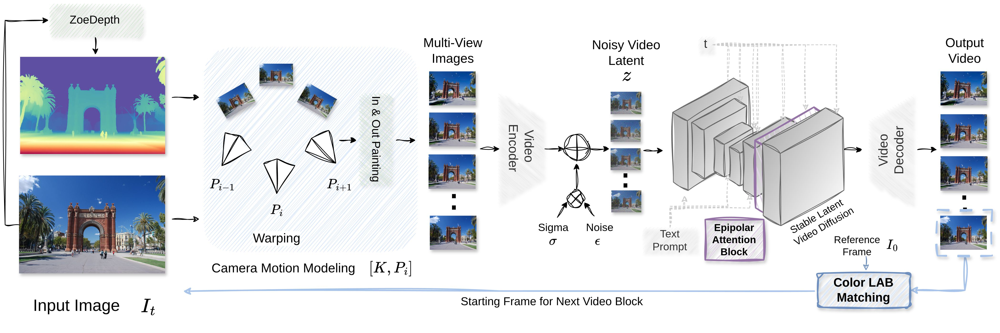

Figures from the paper
The main figures of the current paper version, with the same numbering. Figures 10 and 11 are from the appendix. Click a figure to open it at full size.
TL;DR A frozen video diffusion model can only repair a limited amount of camera motion in one pass. CamTrol++ splits the camera path into passes of at most 15° and generates them one after another. Every pass stays in the range the backbone handles well, with no training.
Training-free, camera-controlled novel view synthesis from a single image using pre-trained video diffusion models often becomes unstable under large camera motion and long generation horizons. Existing approaches commonly combine several inference-time components, making it unclear which design choices are most important for stability. This work identifies the amount of camera motion handled by each diffusion pass as the main factor. CamTrol++ splits the camera path into passes that each cover at most a fixed rotation and generates them one after another, so that every pass stays within the range of motion the backbone handles well. A matched study, in which every setting is scored on the same poses of the same 60° orbit, shows that geometric error grows steadily with the arc per pass, while a single pass both loses geometry and tends to freeze the camera. Under one shared camera path, CamTrol++ achieves the lowest epipolar error and the best held-out 3D Gaussian Splatting reconstruction among CamTrol, NVS-Solver and WAVE, and reaches the quality of CamTrol with the same pass structure at least 3.2× faster. On real RealEstate10K camera motion it matches CamTrol at half the run time. The same procedure also improves 3D reconstruction with a second video backbone, LTX-Video. Geometry-constrained spatial attention, colour anchoring at pass boundaries and a registration-free warping pipeline that makes warping 6× faster complete the framework. The method remains effective for 56-frame generation and under controlled depth corruption. These results show that careful control of camera motion at inference time can substantially improve the stability of camera-controlled novel view synthesis without retraining or modifying the diffusion backbone.
Each pass lifts the latest frame to 3D, warps it along the poses of the pass, fills the holes, and lets a frozen Stable Video Diffusion model refine the clip. The last refined frame starts the next pass.

The number of passes follows from the rotation of the path, K = ⌈Θ / 15°⌉. Short paths stay in one pass and long paths are split.
All methods start from the same image, follow the same camera path with the same intrinsics, and are shown at the same 14 scored poses. Drag the slider to turn the camera.
Every setting follows the same 60° orbit and is scored on the same 14 poses of the same 20 scenes. Only the arc handled by each pass changes, from 10° (six passes) to 60° (one pass).
Why the arc matters. On the same images, a 15° pass leaves 5.2% of each warped frame to the inpainter on average, against 32.5% for one 60° pass, and 64.6% of its last frame. A large arc hands the backbone frames that are mostly invented (Fig. 11 below).
With one large pass SVD freezes the camera and the facade melts into a flat texture, while LTX-Video fills new regions with noisy structures. With 15° passes both backbones turn around the monument. The LTX-Video rows use reprojection only.
60° orbit, 20 MegaScenes images, same 14 scored poses for every method. The right block fits 3D Gaussian Splatting to each sequence with the commanded poses and scores four held-out views. Click a column to rank the methods by it.
Gaussian Splatting fitted to the generated frames, rendered at four views that were not used for fitting.
Held-out 3DGS PSNR with commanded poses and the number of sequences COLMAP registers in full, single pass against 15° passes.
MipNeRF360 (14 inputs): with 15° passes COLMAP registers 12 of 14 sequences against 3 of 14, held-out PSNR rises from 16.98 to 17.42 dB and SSIM from 0.317 to 0.444.
44 RealEstate10K clips. Each method receives the first frame and the camera poses of the clip, and its frames are compared with the real frames at six target poses. The camera rotates by only 10° over a whole clip in median, so the 15° bound gives one pass for 29 clips, two passes for 14 clips and six passes for the one clip that rotates by 50°.
CamTrol++ matches CamTrol at about half the run time. NVS-Solver reaches the highest fidelity on these short paths through gradient guidance at every sampling step, at eight times the run time. The fixed six-pass row always uses six passes, whatever the rotation of the clip. Splitting a short path into more passes than the bound requires lowers PSNR by 1.3 dB, which is why the number of passes follows the rotation of the path.
Added one at a time at 15° per pass, same scenes and poses. The last two rows are two placements of LAB anchoring, each added to the epipolar attention row. The highlighted row is the configuration used for CamTrol++ in every other result.
Epipolar attention lowers EAE, Sampson distance and flicker at both step sizes. LAB anchoring at pass boundaries removes most colour drift and leaves geometry unchanged. Matching the inpainted frames as well gives the lowest colour drift at a small cost in EAE and Sampson distance, so boundary anchoring alone is a lighter variant with slightly lower geometric error. In the full system the refinements leave geometry about where reprojection alone puts it, so the bound on the arc carries the geometric gain. Against real RealEstate10K frames, boundary anchoring lowers the CIEDE2000 colour error from 9.53 to 8.97 and improves 39 of 44 clips.
EAE (×10-3) when the depth map is corrupted before warping. Lower is better.
A depth scale that is too small is the failure that matters. 15° passes limit its effect to +1.32, against +5.83 for a single pass, and keep a much lower EAE under every failure.
The main figures of the current paper version, with the same numbering. Figures 10 and 11 are from the appendix. Click a figure to open it at full size.
Long camera paths generated with CamTrol++, next to WAVE and CamTrol on the same input. Videos play in sync.
@misc{singh2026stabilizingcameracontrollednovelview,
title={Stabilizing Camera-Controlled Novel View Synthesis at Inference Time},
author={Prajwal Singh and Arjun Badola and Seema Kumari and Hajime Nagahara and Shanmuganathan Raman},
year={2026},
eprint={2609.03639},
archivePrefix={arXiv},
primaryClass={cs.CV},
url={https://arxiv.org/abs/2609.03639},
}